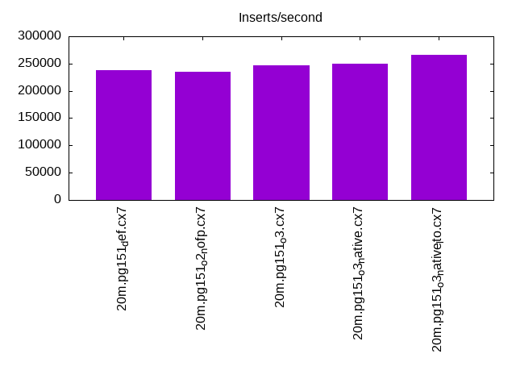
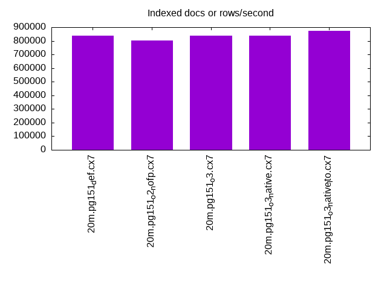
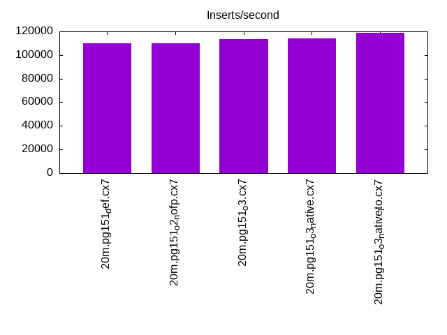
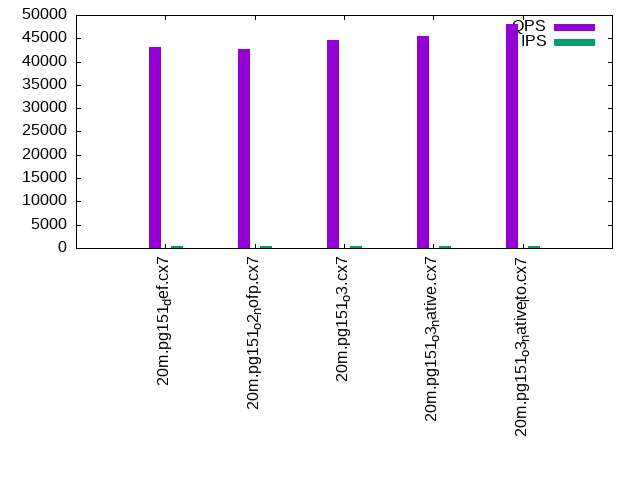
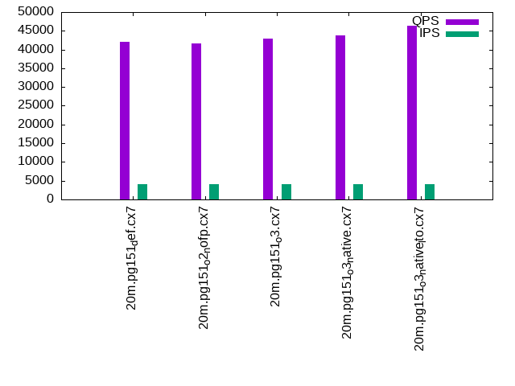

This is a report for the insert benchmark with 20M docs and 4 client(s). It is generated by scripts (bash, awk, sed) and Tufte might not be impressed. An overview of the insert benchmark is here and a short update is here. Below, by DBMS, I mean DBMS+version.config. An example is my8020.c10b40 where my means MySQL, 8020 is version 8.0.20 and c10b40 is the name for the configuration file.
The test server has 8 AMD cores, 16G RAM and an NVMe SSD. It is described here as the Beelink. The benchmark was run with 4 clients and there were 1 or 2 connections per client (1 for queries, 1 for inserts). It uses 4 tables, 1 table per client. It loads 20M rows without secondary indexes, creates secondary indexes, loads another 20M rows then does 3 read+write tests for one hour each that do queries as fast as possible with 100, 500 and then 1000 writes/second/client concurrent with the queries. The database is cached by the storage engine and the only IO is for writes. Clients and the DBMS share one server. The per-database configs are in the per-database subdirectories here.
The tested DBMS are:
The numbers are inserts/s for l.i0 and l.i1, indexed docs (or rows) /s for l.x and queries/s for q*.2. The values are the average rate over the entire test for inserts (IPS) and queries (QPS). The range of values for IPS and QPS is split into 3 parts: bottom 25%, middle 50%, top 25%. Values in the bottom 25% have a red background, values in the top 25% have a green background and values in the middle have no color. A gray background is used for values that can be ignored because the DBMS did not sustain the target insert rate. Red backgrounds are not used when the minimum value is within 80% of the max value.
| dbms | l.i0 | l.x | l.i1 | q100.1 | q500.1 | q1000.1 |
|---|---|---|---|---|---|---|
| 20m.pg151_def.cx7 | 238095 | 837500 | 109890 | 43225 | 42161 | 42030 |
| 20m.pg151_o2_nofp.cx7 | 235294 | 804000 | 109890 | 42768 | 41985 | 41665 |
| 20m.pg151_o3.cx7 | 246914 | 837500 | 113636 | 44640 | 43542 | 42938 |
| 20m.pg151_o3_native.cx7 | 250000 | 837500 | 114286 | 45582 | 44598 | 43713 |
| 20m.pg151_o3_native_lto.cx7 | 266667 | 873913 | 119048 | 48015 | 47362 | 46328 |
This table has relative throughput, throughput for the DBMS relative to the DBMS in the first line, using the absolute throughput from the previous table.
| dbms | l.i0 | l.x | l.i1 | q100.1 | q500.1 | q1000.1 |
|---|---|---|---|---|---|---|
| 20m.pg151_def.cx7 | 1.00 | 1.00 | 1.00 | 1.00 | 1.00 | 1.00 |
| 20m.pg151_o2_nofp.cx7 | 0.99 | 0.96 | 1.00 | 0.99 | 1.00 | 0.99 |
| 20m.pg151_o3.cx7 | 1.04 | 1.00 | 1.03 | 1.03 | 1.03 | 1.02 |
| 20m.pg151_o3_native.cx7 | 1.05 | 1.00 | 1.04 | 1.05 | 1.06 | 1.04 |
| 20m.pg151_o3_native_lto.cx7 | 1.12 | 1.04 | 1.08 | 1.11 | 1.12 | 1.10 |
This lists the average rate of inserts/s for the tests that do inserts concurrent with queries. For such tests the query rate is listed in the table above. The read+write tests are setup so that the insert rate should match the target rate every second. Cells that are not at least 95% of the target have a red background to indicate a failure to satisfy the target.
| dbms | q100.1 | q500.1 | q1000.1 |
|---|---|---|---|
| pg151_def.cx7 | 399 | 1994 | 3989 |
| pg151_o2_nofp.cx7 | 399 | 1994 | 3989 |
| pg151_o3.cx7 | 399 | 1993 | 3989 |
| pg151_o3_native.cx7 | 399 | 1993 | 3989 |
| pg151_o3_native_lto.cx7 | 399 | 1994 | 3989 |
| target | 400 | 2000 | 4000 |
l.i0: load without secondary indexes. Graphs for performance per 1-second interval are here.
Average throughput:
Insert response time histogram: each cell has the percentage of responses that take <= the time in the header and max is the max response time in seconds. For the max column values in the top 25% of the range have a red background and in the bottom 25% of the range have a green background. The red background is not used when the min value is within 80% of the max value.
| dbms | 256us | 1ms | 4ms | 16ms | 64ms | 256ms | 1s | 4s | 16s | gt | max |
|---|---|---|---|---|---|---|---|---|---|---|---|
| pg151_def.cx7 | 99.977 | 0.023 | 0.011 | ||||||||
| pg151_o2_nofp.cx7 | 99.971 | 0.030 | 0.011 | ||||||||
| pg151_o3.cx7 | 99.970 | 0.030 | 0.010 | ||||||||
| pg151_o3_native.cx7 | 99.972 | 0.028 | 0.001 | 0.018 | |||||||
| pg151_o3_native_lto.cx7 | 99.968 | 0.032 | 0.011 |
Performance metrics for the DBMS listed above. Some are normalized by throughput, others are not. Legend for results is here.
ips qps rps rmbps wps wmbps rpq rkbpq wpi wkbpi csps cpups cspq cpupq dbgb1 dbgb2 rss maxop p50 p99 tag 238095 0 0 0.0 279.8 102.8 0.000 0.000 0.001 0.442 24387 71.4 0.102 24 1.9 5.2 0.0 0.011 69625 63652 20m.pg151_def.cx7 235294 0 0 0.0 269.6 98.8 0.000 0.000 0.001 0.430 23282 70.1 0.099 24 1.9 5.2 0.0 0.011 69448 2997 20m.pg151_o2_nofp.cx7 246914 0 0 0.0 290.5 106.5 0.000 0.000 0.001 0.442 24699 69.5 0.100 23 1.9 5.2 0.0 0.010 74120 25881 20m.pg151_o3.cx7 250000 0 0 0.0 289.1 106.4 0.000 0.000 0.001 0.436 24538 69.4 0.098 22 1.9 5.2 0.0 0.018 74245 51744 20m.pg151_o3_native.cx7 266667 0 0 0.0 293.2 105.7 0.000 0.000 0.001 0.406 26154 68.8 0.098 21 1.9 5.2 0.0 0.011 79838 22176 20m.pg151_o3_native_lto.cx7
l.x: create secondary indexes.
Average throughput:
Performance metrics for the DBMS listed above. Some are normalized by throughput, others are not. Legend for results is here.
ips qps rps rmbps wps wmbps rpq rkbpq wpi wkbpi csps cpups cspq cpupq dbgb1 dbgb2 rss maxop p50 p99 tag 837500 0 0 0.0 344.9 159.4 0.000 0.000 0.000 0.195 1566 39.2 0.002 4 3.7 8.6 0.0 0.004 NA NA 20m.pg151_def.cx7 804000 0 0 0.0 464.0 213.8 0.000 0.000 0.001 0.272 2227 38.7 0.003 4 3.7 8.6 0.0 0.004 NA NA 20m.pg151_o2_nofp.cx7 837500 0 0 0.0 342.6 158.5 0.000 0.000 0.000 0.194 1628 40.8 0.002 4 3.7 8.6 0.0 0.004 NA NA 20m.pg151_o3.cx7 837500 0 0 0.0 356.0 162.9 0.000 0.000 0.000 0.199 1575 39.2 0.002 4 3.7 8.6 0.0 0.004 NA NA 20m.pg151_o3_native.cx7 873913 0 0 0.0 399.4 185.2 0.000 0.000 0.000 0.217 1265 39.4 0.001 4 3.7 8.6 0.0 0.004 NA NA 20m.pg151_o3_native_lto.cx7
l.i1: continue load after secondary indexes created. Graphs for performance per 1-second interval are here.
Average throughput:
Insert response time histogram: each cell has the percentage of responses that take <= the time in the header and max is the max response time in seconds. For the max column values in the top 25% of the range have a red background and in the bottom 25% of the range have a green background. The red background is not used when the min value is within 80% of the max value.
| dbms | 256us | 1ms | 4ms | 16ms | 64ms | 256ms | 1s | 4s | 16s | gt | max |
|---|---|---|---|---|---|---|---|---|---|---|---|
| pg151_def.cx7 | 99.983 | 0.017 | 0.001 | 0.062 | |||||||
| pg151_o2_nofp.cx7 | 99.981 | 0.019 | 0.010 | ||||||||
| pg151_o3.cx7 | 99.986 | 0.014 | 0.011 | ||||||||
| pg151_o3_native.cx7 | 99.990 | 0.010 | 0.013 | ||||||||
| pg151_o3_native_lto.cx7 | 99.987 | 0.012 | 0.001 | 0.051 |
Performance metrics for the DBMS listed above. Some are normalized by throughput, others are not. Legend for results is here.
ips qps rps rmbps wps wmbps rpq rkbpq wpi wkbpi csps cpups cspq cpupq dbgb1 dbgb2 rss maxop p50 p99 tag 109890 0 0 0.0 329.2 113.3 0.000 0.000 0.003 1.056 22646 65.4 0.206 48 7.6 20.7 0.0 0.062 28729 18538 20m.pg151_def.cx7 109890 0 0 0.0 333.7 114.1 0.000 0.000 0.003 1.063 22444 65.5 0.204 48 7.6 20.7 1.2 0.010 28719 19978 20m.pg151_o2_nofp.cx7 113636 0 0 0.0 342.4 117.4 0.000 0.000 0.003 1.058 22988 65.8 0.202 46 7.6 20.7 0.0 0.011 29529 19628 20m.pg151_o3.cx7 114286 0 0 0.0 343.5 117.9 0.000 0.000 0.003 1.056 22989 65.6 0.201 46 7.6 20.7 0.0 0.013 29718 20085 20m.pg151_o3_native.cx7 119048 0 0 0.0 358.8 124.1 0.000 0.000 0.003 1.067 24075 66.2 0.202 44 7.6 20.7 0.0 0.051 31266 20827 20m.pg151_o3_native_lto.cx7
q100.1: range queries with 100 insert/s per client. Graphs for performance per 1-second interval are here.
Average throughput:
Query response time histogram: each cell has the percentage of responses that take <= the time in the header and max is the max response time in seconds. For max values in the top 25% of the range have a red background and in the bottom 25% of the range have a green background. The red background is not used when the min value is within 80% of the max value.
| dbms | 256us | 1ms | 4ms | 16ms | 64ms | 256ms | 1s | 4s | 16s | gt | max |
|---|---|---|---|---|---|---|---|---|---|---|---|
| pg151_def.cx7 | 99.983 | 0.012 | 0.005 | nonzero | 0.010 | ||||||
| pg151_o2_nofp.cx7 | 99.982 | 0.012 | 0.006 | nonzero | 0.010 | ||||||
| pg151_o3.cx7 | 99.983 | 0.011 | 0.006 | nonzero | 0.010 | ||||||
| pg151_o3_native.cx7 | 99.985 | 0.010 | 0.005 | nonzero | 0.010 | ||||||
| pg151_o3_native_lto.cx7 | 99.986 | 0.009 | 0.005 | nonzero | 0.010 |
Insert response time histogram: each cell has the percentage of responses that take <= the time in the header and max is the max response time in seconds. For max values in the top 25% of the range have a red background and in the bottom 25% of the range have a green background. The red background is not used when the min value is within 80% of the max value.
| dbms | 256us | 1ms | 4ms | 16ms | 64ms | 256ms | 1s | 4s | 16s | gt | max |
|---|---|---|---|---|---|---|---|---|---|---|---|
| pg151_def.cx7 | 99.556 | 0.444 | 0.012 | ||||||||
| pg151_o2_nofp.cx7 | 99.639 | 0.354 | 0.007 | 0.017 | |||||||
| pg151_o3.cx7 | 99.590 | 0.410 | 0.015 | ||||||||
| pg151_o3_native.cx7 | 99.771 | 0.229 | 0.012 | ||||||||
| pg151_o3_native_lto.cx7 | 99.792 | 0.208 | 0.011 |
Performance metrics for the DBMS listed above. Some are normalized by throughput, others are not. Legend for results is here.
ips qps rps rmbps wps wmbps rpq rkbpq wpi wkbpi csps cpups cspq cpupq dbgb1 dbgb2 rss maxop p50 p99 tag 399 43225 0 0.0 354.7 15.5 0.000 0.000 0.890 39.764 164823 50.5 3.813 93 7.8 22.5 0.0 0.010 11028 8982 20m.pg151_def.cx7 399 42768 0 0.0 355.4 15.5 0.000 0.000 0.891 39.894 163013 50.5 3.812 94 7.8 22.6 0.0 0.010 10904 8950 20m.pg151_o2_nofp.cx7 399 44640 0 0.0 354.7 15.6 0.000 0.000 0.889 40.025 170220 50.7 3.813 91 7.8 22.5 0.0 0.010 11267 9605 20m.pg151_o3.cx7 399 45582 0 0.0 354.5 15.5 0.000 0.000 0.889 39.918 173776 50.7 3.812 89 7.8 22.5 0.0 0.010 11587 10053 20m.pg151_o3_native.cx7 399 48015 0 0.0 354.7 15.5 0.000 0.000 0.890 39.840 183159 50.6 3.815 84 7.8 22.5 0.0 0.010 11975 10596 20m.pg151_o3_native_lto.cx7
q500.1: range queries with 500 insert/s per client. Graphs for performance per 1-second interval are here.
Average throughput:
Query response time histogram: each cell has the percentage of responses that take <= the time in the header and max is the max response time in seconds. For max values in the top 25% of the range have a red background and in the bottom 25% of the range have a green background. The red background is not used when the min value is within 80% of the max value.
| dbms | 256us | 1ms | 4ms | 16ms | 64ms | 256ms | 1s | 4s | 16s | gt | max |
|---|---|---|---|---|---|---|---|---|---|---|---|
| pg151_def.cx7 | 99.948 | 0.033 | 0.018 | 0.001 | nonzero | 0.019 | |||||
| pg151_o2_nofp.cx7 | 99.948 | 0.032 | 0.018 | 0.001 | nonzero | 0.018 | |||||
| pg151_o3.cx7 | 99.949 | 0.032 | 0.018 | 0.001 | nonzero | 0.018 | |||||
| pg151_o3_native.cx7 | 99.952 | 0.030 | 0.018 | nonzero | nonzero | 0.017 | |||||
| pg151_o3_native_lto.cx7 | 99.959 | 0.024 | 0.016 | 0.001 | nonzero | 0.017 |
Insert response time histogram: each cell has the percentage of responses that take <= the time in the header and max is the max response time in seconds. For max values in the top 25% of the range have a red background and in the bottom 25% of the range have a green background. The red background is not used when the min value is within 80% of the max value.
| dbms | 256us | 1ms | 4ms | 16ms | 64ms | 256ms | 1s | 4s | 16s | gt | max |
|---|---|---|---|---|---|---|---|---|---|---|---|
| pg151_def.cx7 | 98.399 | 1.586 | 0.015 | 0.019 | |||||||
| pg151_o2_nofp.cx7 | 97.562 | 2.379 | 0.058 | 0.028 | |||||||
| pg151_o3.cx7 | 98.686 | 1.294 | 0.019 | 0.032 | |||||||
| pg151_o3_native.cx7 | 98.949 | 1.042 | 0.010 | 0.021 | |||||||
| pg151_o3_native_lto.cx7 | 98.467 | 1.514 | 0.019 | 0.024 |
Performance metrics for the DBMS listed above. Some are normalized by throughput, others are not. Legend for results is here.
ips qps rps rmbps wps wmbps rpq rkbpq wpi wkbpi csps cpups cspq cpupq dbgb1 dbgb2 rss maxop p50 p99 tag 1994 42161 0 0.0 365.7 24.2 0.000 0.000 0.183 12.425 159921 51.3 3.793 97 9.4 22.0 0.0 0.019 10788 8966 20m.pg151_def.cx7 1994 41985 0 0.0 365.1 24.2 0.000 0.000 0.183 12.435 159254 51.3 3.793 98 9.4 22.0 0.0 0.018 10616 8551 20m.pg151_o2_nofp.cx7 1993 43542 0 0.0 366.1 24.0 0.000 0.000 0.184 12.331 165352 51.3 3.797 94 9.4 22.0 0.0 0.018 11044 9126 20m.pg151_o3.cx7 1993 44598 0 0.0 366.1 24.0 0.000 0.000 0.184 12.313 169340 51.4 3.797 92 9.4 22.0 0.0 0.017 11268 9174 20m.pg151_o3_native.cx7 1994 47362 0 0.0 364.6 23.9 0.000 0.000 0.183 12.253 179771 51.4 3.796 87 9.4 22.0 0.0 0.017 11923 10261 20m.pg151_o3_native_lto.cx7
q1000.1: range queries with 1000 insert/s per client. Graphs for performance per 1-second interval are here.
Average throughput:
Query response time histogram: each cell has the percentage of responses that take <= the time in the header and max is the max response time in seconds. For max values in the top 25% of the range have a red background and in the bottom 25% of the range have a green background. The red background is not used when the min value is within 80% of the max value.
| dbms | 256us | 1ms | 4ms | 16ms | 64ms | 256ms | 1s | 4s | 16s | gt | max |
|---|---|---|---|---|---|---|---|---|---|---|---|
| pg151_def.cx7 | 99.892 | 0.074 | 0.033 | 0.001 | nonzero | 0.056 | |||||
| pg151_o2_nofp.cx7 | 99.900 | 0.071 | 0.028 | 0.001 | nonzero | 0.043 | |||||
| pg151_o3.cx7 | 99.906 | 0.066 | 0.027 | 0.001 | nonzero | 0.048 | |||||
| pg151_o3_native.cx7 | 99.905 | 0.065 | 0.030 | 0.001 | nonzero | 0.061 | |||||
| pg151_o3_native_lto.cx7 | 99.916 | 0.057 | 0.027 | 0.001 | nonzero | 0.051 |
Insert response time histogram: each cell has the percentage of responses that take <= the time in the header and max is the max response time in seconds. For max values in the top 25% of the range have a red background and in the bottom 25% of the range have a green background. The red background is not used when the min value is within 80% of the max value.
| dbms | 256us | 1ms | 4ms | 16ms | 64ms | 256ms | 1s | 4s | 16s | gt | max |
|---|---|---|---|---|---|---|---|---|---|---|---|
| pg151_def.cx7 | 98.042 | 1.942 | 0.010 | 0.005 | 0.121 | ||||||
| pg151_o2_nofp.cx7 | 97.278 | 2.679 | 0.032 | 0.010 | 0.103 | ||||||
| pg151_o3.cx7 | 97.786 | 2.174 | 0.034 | 0.006 | 0.089 | ||||||
| pg151_o3_native.cx7 | 97.251 | 2.709 | 0.035 | 0.005 | 0.123 | ||||||
| pg151_o3_native_lto.cx7 | 97.628 | 2.318 | 0.044 | 0.010 | 0.090 |
Performance metrics for the DBMS listed above. Some are normalized by throughput, others are not. Legend for results is here.
ips qps rps rmbps wps wmbps rpq rkbpq wpi wkbpi csps cpups cspq cpupq dbgb1 dbgb2 rss maxop p50 p99 tag 3989 42030 30 0.3 501.1 34.8 0.001 0.006 0.126 8.922 158261 52.4 3.765 100 11.9 22.7 0.0 0.056 10628 8458 20m.pg151_def.cx7 3989 41665 31 0.3 502.2 34.8 0.001 0.006 0.126 8.924 156520 52.5 3.757 101 11.9 22.7 0.0 0.043 10563 8373 20m.pg151_o2_nofp.cx7 3989 42938 31 0.3 504.0 34.7 0.001 0.006 0.126 8.911 161442 52.5 3.760 98 11.9 22.7 0.0 0.048 10909 8791 20m.pg151_o3.cx7 3989 43713 31 0.3 503.2 34.7 0.001 0.006 0.126 8.918 164549 52.4 3.764 96 11.9 22.7 0.0 0.061 11060 8950 20m.pg151_o3_native.cx7 3989 46328 34 0.3 503.4 34.4 0.001 0.006 0.126 8.843 174435 52.5 3.765 91 11.9 22.7 0.0 0.051 11683 9525 20m.pg151_o3_native_lto.cx7
l.i0: load without secondary indexes
Performance metrics for all DBMS, not just the ones listed above. Some are normalized by throughput, others are not. Legend for results is here.
ips qps rps rmbps wps wmbps rpq rkbpq wpi wkbpi csps cpups cspq cpupq dbgb1 dbgb2 rss maxop p50 p99 tag 238095 0 0 0.0 279.8 102.8 0.000 0.000 0.001 0.442 24387 71.4 0.102 24 1.9 5.2 0.0 0.011 69625 63652 20m.pg151_def.cx7 235294 0 0 0.0 269.6 98.8 0.000 0.000 0.001 0.430 23282 70.1 0.099 24 1.9 5.2 0.0 0.011 69448 2997 20m.pg151_o2_nofp.cx7 246914 0 0 0.0 290.5 106.5 0.000 0.000 0.001 0.442 24699 69.5 0.100 23 1.9 5.2 0.0 0.010 74120 25881 20m.pg151_o3.cx7 250000 0 0 0.0 289.1 106.4 0.000 0.000 0.001 0.436 24538 69.4 0.098 22 1.9 5.2 0.0 0.018 74245 51744 20m.pg151_o3_native.cx7 266667 0 0 0.0 293.2 105.7 0.000 0.000 0.001 0.406 26154 68.8 0.098 21 1.9 5.2 0.0 0.011 79838 22176 20m.pg151_o3_native_lto.cx7
l.x: create secondary indexes
Performance metrics for all DBMS, not just the ones listed above. Some are normalized by throughput, others are not. Legend for results is here.
ips qps rps rmbps wps wmbps rpq rkbpq wpi wkbpi csps cpups cspq cpupq dbgb1 dbgb2 rss maxop p50 p99 tag 837500 0 0 0.0 344.9 159.4 0.000 0.000 0.000 0.195 1566 39.2 0.002 4 3.7 8.6 0.0 0.004 NA NA 20m.pg151_def.cx7 804000 0 0 0.0 464.0 213.8 0.000 0.000 0.001 0.272 2227 38.7 0.003 4 3.7 8.6 0.0 0.004 NA NA 20m.pg151_o2_nofp.cx7 837500 0 0 0.0 342.6 158.5 0.000 0.000 0.000 0.194 1628 40.8 0.002 4 3.7 8.6 0.0 0.004 NA NA 20m.pg151_o3.cx7 837500 0 0 0.0 356.0 162.9 0.000 0.000 0.000 0.199 1575 39.2 0.002 4 3.7 8.6 0.0 0.004 NA NA 20m.pg151_o3_native.cx7 873913 0 0 0.0 399.4 185.2 0.000 0.000 0.000 0.217 1265 39.4 0.001 4 3.7 8.6 0.0 0.004 NA NA 20m.pg151_o3_native_lto.cx7
l.i1: continue load after secondary indexes created
Performance metrics for all DBMS, not just the ones listed above. Some are normalized by throughput, others are not. Legend for results is here.
ips qps rps rmbps wps wmbps rpq rkbpq wpi wkbpi csps cpups cspq cpupq dbgb1 dbgb2 rss maxop p50 p99 tag 109890 0 0 0.0 329.2 113.3 0.000 0.000 0.003 1.056 22646 65.4 0.206 48 7.6 20.7 0.0 0.062 28729 18538 20m.pg151_def.cx7 109890 0 0 0.0 333.7 114.1 0.000 0.000 0.003 1.063 22444 65.5 0.204 48 7.6 20.7 1.2 0.010 28719 19978 20m.pg151_o2_nofp.cx7 113636 0 0 0.0 342.4 117.4 0.000 0.000 0.003 1.058 22988 65.8 0.202 46 7.6 20.7 0.0 0.011 29529 19628 20m.pg151_o3.cx7 114286 0 0 0.0 343.5 117.9 0.000 0.000 0.003 1.056 22989 65.6 0.201 46 7.6 20.7 0.0 0.013 29718 20085 20m.pg151_o3_native.cx7 119048 0 0 0.0 358.8 124.1 0.000 0.000 0.003 1.067 24075 66.2 0.202 44 7.6 20.7 0.0 0.051 31266 20827 20m.pg151_o3_native_lto.cx7
q100.1: range queries with 100 insert/s per client
Performance metrics for all DBMS, not just the ones listed above. Some are normalized by throughput, others are not. Legend for results is here.
ips qps rps rmbps wps wmbps rpq rkbpq wpi wkbpi csps cpups cspq cpupq dbgb1 dbgb2 rss maxop p50 p99 tag 399 43225 0 0.0 354.7 15.5 0.000 0.000 0.890 39.764 164823 50.5 3.813 93 7.8 22.5 0.0 0.010 11028 8982 20m.pg151_def.cx7 399 42768 0 0.0 355.4 15.5 0.000 0.000 0.891 39.894 163013 50.5 3.812 94 7.8 22.6 0.0 0.010 10904 8950 20m.pg151_o2_nofp.cx7 399 44640 0 0.0 354.7 15.6 0.000 0.000 0.889 40.025 170220 50.7 3.813 91 7.8 22.5 0.0 0.010 11267 9605 20m.pg151_o3.cx7 399 45582 0 0.0 354.5 15.5 0.000 0.000 0.889 39.918 173776 50.7 3.812 89 7.8 22.5 0.0 0.010 11587 10053 20m.pg151_o3_native.cx7 399 48015 0 0.0 354.7 15.5 0.000 0.000 0.890 39.840 183159 50.6 3.815 84 7.8 22.5 0.0 0.010 11975 10596 20m.pg151_o3_native_lto.cx7
q500.1: range queries with 500 insert/s per client
Performance metrics for all DBMS, not just the ones listed above. Some are normalized by throughput, others are not. Legend for results is here.
ips qps rps rmbps wps wmbps rpq rkbpq wpi wkbpi csps cpups cspq cpupq dbgb1 dbgb2 rss maxop p50 p99 tag 1994 42161 0 0.0 365.7 24.2 0.000 0.000 0.183 12.425 159921 51.3 3.793 97 9.4 22.0 0.0 0.019 10788 8966 20m.pg151_def.cx7 1994 41985 0 0.0 365.1 24.2 0.000 0.000 0.183 12.435 159254 51.3 3.793 98 9.4 22.0 0.0 0.018 10616 8551 20m.pg151_o2_nofp.cx7 1993 43542 0 0.0 366.1 24.0 0.000 0.000 0.184 12.331 165352 51.3 3.797 94 9.4 22.0 0.0 0.018 11044 9126 20m.pg151_o3.cx7 1993 44598 0 0.0 366.1 24.0 0.000 0.000 0.184 12.313 169340 51.4 3.797 92 9.4 22.0 0.0 0.017 11268 9174 20m.pg151_o3_native.cx7 1994 47362 0 0.0 364.6 23.9 0.000 0.000 0.183 12.253 179771 51.4 3.796 87 9.4 22.0 0.0 0.017 11923 10261 20m.pg151_o3_native_lto.cx7
q1000.1: range queries with 1000 insert/s per client
Performance metrics for all DBMS, not just the ones listed above. Some are normalized by throughput, others are not. Legend for results is here.
ips qps rps rmbps wps wmbps rpq rkbpq wpi wkbpi csps cpups cspq cpupq dbgb1 dbgb2 rss maxop p50 p99 tag 3989 42030 30 0.3 501.1 34.8 0.001 0.006 0.126 8.922 158261 52.4 3.765 100 11.9 22.7 0.0 0.056 10628 8458 20m.pg151_def.cx7 3989 41665 31 0.3 502.2 34.8 0.001 0.006 0.126 8.924 156520 52.5 3.757 101 11.9 22.7 0.0 0.043 10563 8373 20m.pg151_o2_nofp.cx7 3989 42938 31 0.3 504.0 34.7 0.001 0.006 0.126 8.911 161442 52.5 3.760 98 11.9 22.7 0.0 0.048 10909 8791 20m.pg151_o3.cx7 3989 43713 31 0.3 503.2 34.7 0.001 0.006 0.126 8.918 164549 52.4 3.764 96 11.9 22.7 0.0 0.061 11060 8950 20m.pg151_o3_native.cx7 3989 46328 34 0.3 503.4 34.4 0.001 0.006 0.126 8.843 174435 52.5 3.765 91 11.9 22.7 0.0 0.051 11683 9525 20m.pg151_o3_native_lto.cx7
Insert response time histogram
256us 1ms 4ms 16ms 64ms 256ms 1s 4s 16s gt max tag 0.000 0.000 99.977 0.023 0.000 0.000 0.000 0.000 0.000 0.000 0.011 pg151_def.cx7 0.000 0.000 99.971 0.030 0.000 0.000 0.000 0.000 0.000 0.000 0.011 pg151_o2_nofp.cx7 0.000 0.000 99.970 0.030 0.000 0.000 0.000 0.000 0.000 0.000 0.010 pg151_o3.cx7 0.000 0.000 99.972 0.028 0.001 0.000 0.000 0.000 0.000 0.000 0.018 pg151_o3_native.cx7 0.000 0.000 99.968 0.032 0.000 0.000 0.000 0.000 0.000 0.000 0.011 pg151_o3_native_lto.cx7
TODO - determine whether there is data for create index response time
Insert response time histogram
256us 1ms 4ms 16ms 64ms 256ms 1s 4s 16s gt max tag 0.000 0.000 99.983 0.017 0.001 0.000 0.000 0.000 0.000 0.000 0.062 pg151_def.cx7 0.000 0.000 99.981 0.019 0.000 0.000 0.000 0.000 0.000 0.000 0.010 pg151_o2_nofp.cx7 0.000 0.000 99.986 0.014 0.000 0.000 0.000 0.000 0.000 0.000 0.011 pg151_o3.cx7 0.000 0.000 99.990 0.010 0.000 0.000 0.000 0.000 0.000 0.000 0.013 pg151_o3_native.cx7 0.000 0.000 99.987 0.012 0.001 0.000 0.000 0.000 0.000 0.000 0.051 pg151_o3_native_lto.cx7
Query response time histogram
256us 1ms 4ms 16ms 64ms 256ms 1s 4s 16s gt max tag 99.983 0.012 0.005 nonzero 0.000 0.000 0.000 0.000 0.000 0.000 0.010 pg151_def.cx7 99.982 0.012 0.006 nonzero 0.000 0.000 0.000 0.000 0.000 0.000 0.010 pg151_o2_nofp.cx7 99.983 0.011 0.006 nonzero 0.000 0.000 0.000 0.000 0.000 0.000 0.010 pg151_o3.cx7 99.985 0.010 0.005 nonzero 0.000 0.000 0.000 0.000 0.000 0.000 0.010 pg151_o3_native.cx7 99.986 0.009 0.005 nonzero 0.000 0.000 0.000 0.000 0.000 0.000 0.010 pg151_o3_native_lto.cx7
Insert response time histogram
256us 1ms 4ms 16ms 64ms 256ms 1s 4s 16s gt max tag 0.000 0.000 99.556 0.444 0.000 0.000 0.000 0.000 0.000 0.000 0.012 pg151_def.cx7 0.000 0.000 99.639 0.354 0.007 0.000 0.000 0.000 0.000 0.000 0.017 pg151_o2_nofp.cx7 0.000 0.000 99.590 0.410 0.000 0.000 0.000 0.000 0.000 0.000 0.015 pg151_o3.cx7 0.000 0.000 99.771 0.229 0.000 0.000 0.000 0.000 0.000 0.000 0.012 pg151_o3_native.cx7 0.000 0.000 99.792 0.208 0.000 0.000 0.000 0.000 0.000 0.000 0.011 pg151_o3_native_lto.cx7
Query response time histogram
256us 1ms 4ms 16ms 64ms 256ms 1s 4s 16s gt max tag 99.948 0.033 0.018 0.001 nonzero 0.000 0.000 0.000 0.000 0.000 0.019 pg151_def.cx7 99.948 0.032 0.018 0.001 nonzero 0.000 0.000 0.000 0.000 0.000 0.018 pg151_o2_nofp.cx7 99.949 0.032 0.018 0.001 nonzero 0.000 0.000 0.000 0.000 0.000 0.018 pg151_o3.cx7 99.952 0.030 0.018 nonzero nonzero 0.000 0.000 0.000 0.000 0.000 0.017 pg151_o3_native.cx7 99.959 0.024 0.016 0.001 nonzero 0.000 0.000 0.000 0.000 0.000 0.017 pg151_o3_native_lto.cx7
Insert response time histogram
256us 1ms 4ms 16ms 64ms 256ms 1s 4s 16s gt max tag 0.000 0.000 98.399 1.586 0.015 0.000 0.000 0.000 0.000 0.000 0.019 pg151_def.cx7 0.000 0.000 97.562 2.379 0.058 0.000 0.000 0.000 0.000 0.000 0.028 pg151_o2_nofp.cx7 0.000 0.000 98.686 1.294 0.019 0.000 0.000 0.000 0.000 0.000 0.032 pg151_o3.cx7 0.000 0.000 98.949 1.042 0.010 0.000 0.000 0.000 0.000 0.000 0.021 pg151_o3_native.cx7 0.000 0.000 98.467 1.514 0.019 0.000 0.000 0.000 0.000 0.000 0.024 pg151_o3_native_lto.cx7
Query response time histogram
256us 1ms 4ms 16ms 64ms 256ms 1s 4s 16s gt max tag 99.892 0.074 0.033 0.001 nonzero 0.000 0.000 0.000 0.000 0.000 0.056 pg151_def.cx7 99.900 0.071 0.028 0.001 nonzero 0.000 0.000 0.000 0.000 0.000 0.043 pg151_o2_nofp.cx7 99.906 0.066 0.027 0.001 nonzero 0.000 0.000 0.000 0.000 0.000 0.048 pg151_o3.cx7 99.905 0.065 0.030 0.001 nonzero 0.000 0.000 0.000 0.000 0.000 0.061 pg151_o3_native.cx7 99.916 0.057 0.027 0.001 nonzero 0.000 0.000 0.000 0.000 0.000 0.051 pg151_o3_native_lto.cx7
Insert response time histogram
256us 1ms 4ms 16ms 64ms 256ms 1s 4s 16s gt max tag 0.000 0.000 98.042 1.942 0.010 0.005 0.000 0.000 0.000 0.000 0.121 pg151_def.cx7 0.000 0.000 97.278 2.679 0.032 0.010 0.000 0.000 0.000 0.000 0.103 pg151_o2_nofp.cx7 0.000 0.000 97.786 2.174 0.034 0.006 0.000 0.000 0.000 0.000 0.089 pg151_o3.cx7 0.000 0.000 97.251 2.709 0.035 0.005 0.000 0.000 0.000 0.000 0.123 pg151_o3_native.cx7 0.000 0.000 97.628 2.318 0.044 0.010 0.000 0.000 0.000 0.000 0.090 pg151_o3_native_lto.cx7